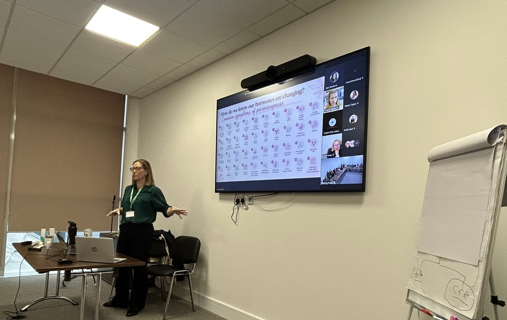

Corporate Menopause Education
Supporting people. Strengthening workplaces.
Why workplace menopause education matters

Menopause isn't just a personal health issue. It's a workplace issue too.
Employees experiencing perimenopause or menopause may face challenges that affect confidence, wellbeing and performance at work. When employers understand these challenges, they are better equipped to provide meaningful support.
MidLife Health Academy provides professional, evidence-based menopause education for businesses, managers and employees, helping organisations create supportive and informed workplaces.
What can sessions cover?
Sessions are tailored to the needs of your organisation and audience, and may include:
- Understanding perimenopause and menopause.
- Symptoms and their impact in the workplace.
- HRT, treatment options and myth-busting.
- Sickness absence and employee wellbeing.
- Recruitment and retention of experienced staff.
- Employment law, equality and reasonable adjustments.
- Creating a menopause-supportive workplace culture.
Benefits for organisations
Workplace menopause education helps organisations build awareness, encourage understanding and support valued members of staff through an important stage of life.
- Improve awareness and understanding.
- Support employee wellbeing.
- Encourage open and informed conversations.
- Help managers feel more confident supporting staff.
- Strengthen recruitment and retention.
- Create a more inclusive workplace culture.
Nurse-led, evidence-based education
Lisa is a Registered Nurse with more than 20 years of NHS experience, a British Menopause Society member and a qualified educator with specialist menopause training.
Her workplace sessions combine clinical knowledge, practical guidance and an approachable teaching style, ensuring information is both accurate and accessible.
Pricing
Corporate Menopause Education
Tailored Packages
From one-off workshops to ongoing education programmes, sessions can be tailored to suit your organisation's needs.
Corporate packages are priced individually. Please get in touch to discuss your requirements.
Enquire About Workplace Training
Whether you're looking for a single workshop, manager training or a wider menopause education programme, I'd be delighted to discuss how MidLife Health Academy can support your organisation.
Email: EMAIL
WhatsApp: PHONE NUMBER